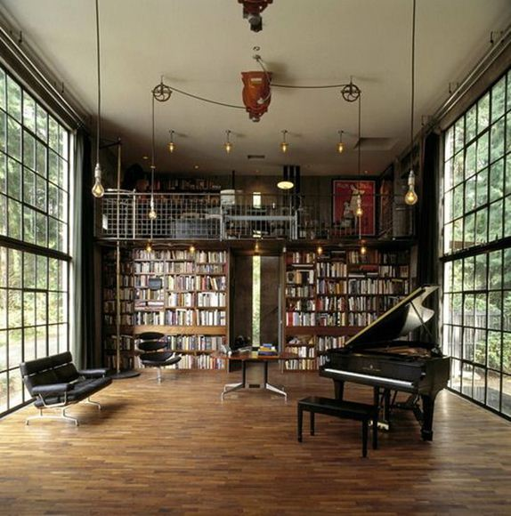
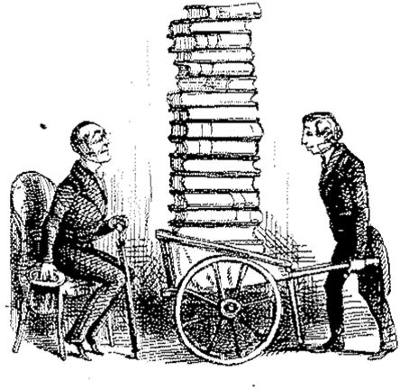

« Et il relut Kant, et il le comprit, ou crut le comprendre. »
BAUDELAIRE
On ne peut, on ne devrait, pour l’estime que tout un chacun serait consciencieusement porté à attacher envers sa propre personne, trouver le réflexe de qualifier un livre d’ennuyeux. La lecture n’est pas un divertissement. Plus précisément, elle peut s’accorder de contenir une part de divertissement, mais elle n’est et ne sera jamais purement qu’un divertissement, dépouillé de toute autre substance.
Un livre peut se dire d’être médiocre, drôle, éthéré, sacré, génial, inspiré, travaillé, raté, maladroit, mais ennuyeux, par pitié non ! Jamais. Il s’avère digne d’intérêt, donc il mérite d’être lu, ou l’est peu, ou ne l’est pas.
Car payer de son poids par la somme des amusettes récréatives qu’il distille, à l’instar du symbolique autant que désormais consacré roman de gare, promu au statut de livre de chevet du peuple, non plus en armes, mais plastronné de diplômes, trahit d’une perte de capacité de l’individu à considérer autrement de la valeur d’un produit de l’intellect que par celle de la jouissance en tant qu’interaction avec un objet de loisir, dans un monde où le non-moi tangible voit peu à peu se colorier l’intégralité de ses sujets en sources d’agrément, au même titre que des vacances ennuyeuses, un parc à thème ennuyeux, ou encore un film avec Jennifer Aniston et Owen Wilson ennuyeux. L’ennui, mot nouveau car redéfini par notre modernité, c’est tout ce qui caractérise ce qui ne réussit pas, ce qui ne parvient pas à touiller dans la marmite d’agitation fiévreuse du frais produit individu, ce fameux clone-robot festiviste.
Jouir sans douleur implique de jouir sans effort. Dans l’urgence où son inquiétude lui ordonne d’éprouver à jouir, monsieur festivus n’entend pas s’encombrer de longueurs, d’équivoques désarçonnants, d’archaïsmes, opposants déclarés à la jouissance sans médium. Il faut aller droit au but/aux putes (capitalistes). Le livre se doit d’être un porno rondement mené. Un incipit, de l’action franche, quelques péripéties, des changements de rythme, un combat final en apothéose avec la mise à mort du méchant par le gentil (deus et fortuna ex machina si possible), enfin quelques questions. On se pose toujours des questions, après avoir libéralement déversé de la passion sur l’immarcescible coït né de la grâce des frères Lumière. Mais on n’y apporte pas de réponses, du moins pas complètes. On n’en prend pas le temps. On n’en perd pas le temps. On oublie. On a joui, on prend congé de la jouissance sous une de ses formes. Tout au plus médite-t-on sur les affres du retour prochain de l’urgence à jouir en attendant le retour de son arrivée… L’infini à la portée des caniches. Il se promène la même substance dans leurs cortex après le dernier souffle de Voldemort que dans les enlacements sans réelle franchise qui accompagnent le morbide jeu des unions. (A ce propos, la femme moderne est une drôle de création de la naïveté coupable. Souvent drapée dans une étonnante superbe, elle se méfie dans l’avant, le menton haut comme un adjudant lors de la revue des troupes, et puis soudainement elle s’adonne et s’abandonne sans la moindre retenue, sans jeu, sans mystique, donc forcément décevante. Dans ce genre d’après, la méfiance serait pour elle plus que jamais de mise. Me désirera t-il encore ? Pour lui mon âme est à nu. Qu’attend-il de plus ? Voulant rebattre les cartes et mettre à plat les règles, elle transparaît comme un peu plus consommable qu’elle ne s’imagine.)
Le livre, cette jouissance terrestre. (Peut-on éprouver autre chose que de la répugnance à l’évocation d’une telle idée ?) Par exemple, le livre se consomme le mercredi soir, comme l’Aston DB9 le dimanche matin ou un jéroboam de Piper le vendredi soir. C’est plat et tout benêt, un mercredi soir. C’est comme François Bayrou, c’est perdu au milieu. Le livre est un passe-temps glissé entre deux jouissances plus franches. Le livre affronte le temps mort, et temps mort vaut bien sapience. Sur les soucoupes volantes SS photographiées en 1946, les machinations du diable au Saint-Siège, les tribulations d’une femme comme les autres, livrée à elle-même dans le froid monde moderne des grandes villes dénuées d’âme et de douceur sensible…
Le riche, par ailleurs, ne lit pas : il n’a pas connaissance des temps morts. Il est mort. Il est, tout en étant mort. Renvoyé aux cimes de la réanimalisation extatique, il jouit et n’œuvre qu’à la garantie de pérenniser sa jouissance, concept dont toute sa vie il s’est fait une certaine idée. (Relevant du triptyque mammiférien santé, opulence et confort.) Le riche dispose des outils de la jouissance, il a tous les outils de la jouissance et les outils de la toute-jouissance. Le riche a une bibliothèque nourrie. Il faut dire que les hauts-plafonds sont bibliophages ! Le plus souvent, il agrémente son espace d’un piano de marque, concept de l’instrument de musique en tant que pièce d’ameublement décoratif.
Le haut-fonctionnaire, le haut responsable, par extension toute éminence, petite ou plus grande, qui échoue à lire, et à lire tout le temps, échoue à la substance première de sa fonction. On trouve à son chevet Capital, un Financial Times de la semaine passée, et puis un album de Tintin.
Plus loin, sur un radiateur ou bien sur l’entablement de la cheminée, sous l’écran Toshiba 42 pouces à haute-définition, il traîne une cale d’armoire, à tout hasard les mémoires de Jacques Chirac, avancé à la cinquantième page en deux ans, ou bien encore le dernier lauréat d’un prix Français, matraqué avec sauvagerie l’autre jour sur BFM et I-Télé. Le machin chose est écornassé, et puis un marque-page singeant du papyrus s’essouffle à quelques millimètres du début. (Un tantinet plus si, ô suprême occurrence, il eut fallu sauter un avant-propos, ou que sais-je d’ennuyeux encore.) Il a été emmené, transporté, montré, mais lu, jamais.
Chez les riches, c’est-à-dire une fois tous les trente-six du mois, je pioche dans leurs bibliothèques, je picore, très parcimonieusement, le nez fourré dans la rangée d’une étagère parmi trente autres. Tout d’abord parce qu’ils ne s’en rendront jamais compte. Ils sont bien loin de pouvoir en nommer cinquante, dans les cinq à mille cinq cents titres qui tapissent leur muraille de salon. Deuxièmement parce que ça m’exaspère d’avoir à donner mon argent aux escrocs blanc-de-pucelle de l’officine de charité en bas de la rue (où tout bouquin de riche, fatalement, vient y finir sa terne carrière). Troisièmement, je ne sélectionne que du neuf de chez neuf.
De l’immaculé. Du jamais défloré, du cachemire avec Mir laine, de l’un jour acheté pis voilà. Quand la tranche accuse plusieurs années de poussière, que le dos est sans craquelure, pourquoi pas ? Ces pages n’ont selon toute vraisemblance jamais été parcourues, vraisemblablement en ce lieu ne le seront-elles jamais. Appelez-ça du vol, shérif de Nottingham. Je rentabilise les forêts qu’on abat, moi. J’ai la fibre écolo, en fait ; Robin des Bois sauvegardant l’industrie du papier des gaspillages, elle et ses arbres « 20 pastilles + 2 gratuites », après le jeu concours de « replantage » fait avec la petite, au dos de la boîte d’Ariel.
Il y a quand même une riche qui passe (qui trépasse, à vrai dire) dix heures par jour devant l’œil du diable, en compagnie de Drucker, Yann Barthès, Ruquier, Patrick Sébastien et j’en passe des plus capés, tous hiérophantes implorant Cadmos aux dents de dragon, bref à qui j’ai l’avertissant emprunté La Raison dans l’Histoire hégelienne, et qui m’a fort aimablement prié de le lui rendre une fois terminé, afin « qu’[elle] puisse le lire. » Et voilà. Bim. La tournure était celle-ci. Afin qu’elle le puisse. La puissance satisfait à son désir. L’hypothèse de l’instruction, dans le règne de la jouissance, est devenue synonyme d’instruction. Je ne lui ai bien évidemment pas rendu ce volume. Qui aurait abandonné ce chétif juif de papier à unSonderkommando des talk-shows télé ? Qui ? Qui !
Depuis, elle en a oublié jusqu’à l’existence même de Hegel. Hegel ne se fait l’écho ni du taux d’intérêt sur un plan bancaire, ni de la jouissance caribéenne qui en dérive, amarrée à un yacht en eaux cristallines, avec des petits poissons multicolores autour, ce qu’il faut pour retenir l’attention trépignante d’un composite chihuahua-yorkshire avec une dose de téquel dans le colis.
Vient l’heure du déménagement, instant à risque pour les livres. Un grand sac en plastique noir se prépare à boulotter tout qui ne décrochera pas son visa pour l’autre monde – l’autre immeuble, l’autre manoir. Les bouquins de la môme qui vient de finir ses années collège lycée, et qu’elle a rigoureusement tenu en haine pendant tout ce temps, le sort de ceux-là ne fait aucun doute. Exit les Madame Bovary, les Electre et les Perceval, à quoi cela pourrait-il lui servir, maintenant qu’elle est en école de commerce ? En revanche, sa collection de Tintin aura droit à un empaquetage soigné : papier à bulles massif, cacahuètes de polystyrène et carton en double cannelure. Tintin, c’est sacré. Tintin, ça contient aussi un message pour les adultes, tu vois. (S’agissant des dialogues que l’adolescent de 1940, effectivement, parvenait à comprendre.) Tintin, c’est l’alpha et l’oméga littéraire moderne et Hergé, le Tite-Live du siècle. En refermant doucement la porte de la bibliothèque, ce Valère-Maxime égaré revenu entre de pieuses mains, profitez d’une fulgurance pour vous remémorer les estocades de Rackham le Rouge. À table on pourra causer belles lettres, avec votre voisin. Avec Tintin, et puis Astérix, on tient une heure, en plus vous serez vu comme quelqu’un de sympa. Il y aura toujours un autre zig pour vous entretenir d’un secret d’Uderzo, etc. Vous pourrez embrayer sur les dessins animés et le cinoche.
Second point centripète de l’exhibitionnisme pittoresco-livresque du riche, la table basse du salon (en verre transparent), pour les apéros et les digeos. C’est dire si on va parler d’art. Un sérail de livres entreposés sans la moindre corne, sans éraflure, affranchis de leur enveloppe plastifiée puis déposés en reliques pour les siècles des siècles. Amen. Prendre sa coupe avec Klimt et Manet sous les bulles, ça donne l’impression d’avoir du goût. Mieux, ça laisse à penser à l’invité qu’attention, on n’a pas en face de soi le dernier des béotiens ; voire même peut-être qu’on s’intéresserait pour de vrai, « just as a hobby », à côté de la vraie vie qui consiste à faire des affaires. La pile d’impressionnistes peut, sait-on jamais, ouvrir une parenthèse sur la dernière vente qui a fait grand bruit à Sotheby’s. (Une tasse de capuccino renversée ou un chien en taxidermie éventré, adjugeons le tout à environ cinquante millions de dollars.) On a tous en nous quelque chose de Trimalcion.
« Un livre à quoi ça sert, dans le monde d’aujourd’hui ? » On ne spécule pas sur un livre. Un tableau, au moins, ça peut gagner en valeur. « Alors, à quoi ça peut servir ? » Servir. Le livre à l’épreuve du servage. Que va-t-il m’apporter, que peut-il me rapporter, cet investissement ? Une midinette de 23 ans, sobrement idiote, esclave rémunérée dans la publicité chez Samsung (sous-entendez « Assistante de confection produit marketing », onomastique plus propre à titiller sa fierté), se vantait avec un air de lire Piketty. Fort bien. Parce qu’elle pensait qu’il lui en serait profitable, terme à considérer dans son acception la plus anglo-saxonne possible. Fut-il jamais auréolé du saint blanc-seing du comité du Nobel, dont par ailleurs elle ignore tout des mécanismes d’attribution, elle ne se serait jamais, pour le moins du monde, soucié de l’existence de ce type. L’ouvrage qui ne se présente sous le versant du loisir endosse la cape du bénéfice. Et le bénéfice, de nos jours, se décompte avec un bruit de caisse enregistreuse. Elle entendait mieux réussir sa vie professionnelle, parce qu’elle a lu Piketty. Sait-on jamais.
Si le livre vous ennuie, inutile de s’échiner à le finir, vous pécheriez d’orgueil en plus d’emmener votre croix sur le calvaire. Quitte à endosser le vice de fierté, ne lisez pas et soyez contents de vous. Le programme télé, Tintin, le lexique des emails corporate, ça fera l’affaire. L’univers des écrans, lui qui s’adresse à tous, gentil et zappable à volonté, vous attend. Chips, lit douillet et cidre doux, bon abandon et abonnement aux délices nimbés d’une humanité enfin, youpi hourra, achevée.